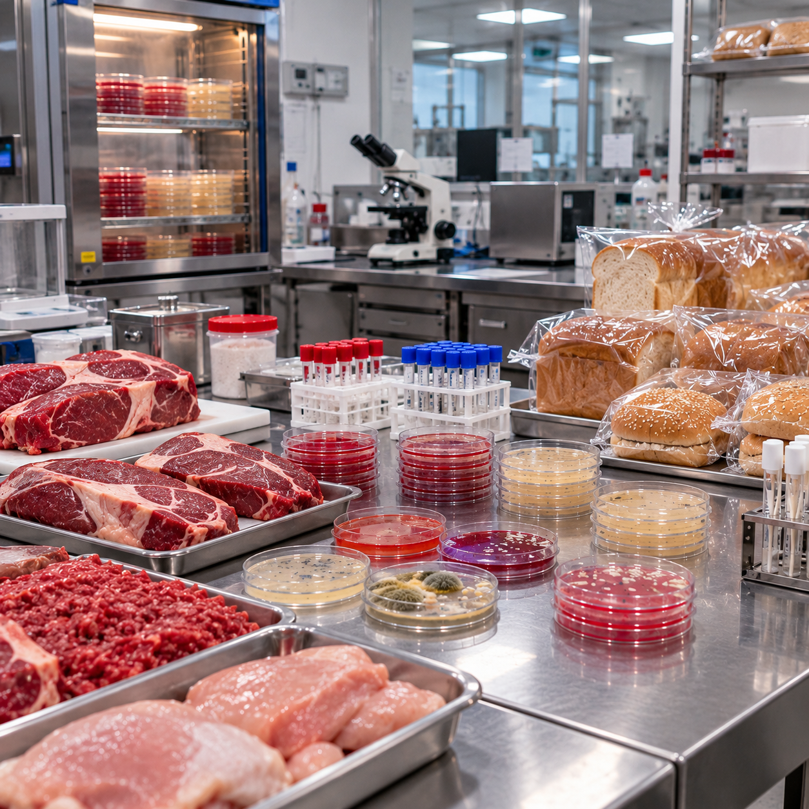

Servicios BIOS
Servicios para plantas
Análisis de calidad para plantas envasadoras y plantas de beneficio animal.
PLANTAS ENVASADORAS
Higiene y control de procesos.
BENEFICIO ANIMAL
Soluciones analíticas para tus procesos.

PLANTAS ENVASADORAS
Análisis para controlar la calidad de los procesos de envasado.
Buenas prácticas de higiene
- Frotis de superficies
- Frotis de manos
- Ambientes
Análisis de empaque
- Mesófilos
- Coliformes totales
- Staphylococcus aureus coagulasa positiva
- Mohos
- Levaduras
PLANTAS DE BENEFICIO ANIMAL
Análisis para bovinos, porcinos, bufalinos y aves de corral.
Análisis microbiológicos
- Bovinos
- Porcinos
- Bufalinos
- Aves de corral
Buenas prácticas de higiene
- Frotis de superficies
- Frotis de manos
- Ambientes
Higiene y control de procesos productivos
Buenas prácticas de manufactura
- Frotis de manos del personal manipulador
- Frotis de superficies y equipos
- Monitoreo de ambientes de las áreas de proceso
Microorganismos evaluados
- Mesófilos y coliformes totales
- Staphylococcus aureus coagulasa positiva
- Mohos y levaduras
- Patógenos como Salmonella spp. y Listeria monocytogenes
¿Cómo se evalúa?
- Frotis con escobillón estéril en manos, superficies y equipos
- Monitoreo de ambientes por sedimentación con cajas de Petri expuestas 20 minutos
- Incubación de las muestras y emisión del concepto de calidad
Esterilidad comercial
- Aplica a productos envasados y tratados térmicamente
- Verifica la ausencia de microorganismos capaces de desarrollarse en condiciones normales de almacenamiento
- Incluye Campylobacter spp. para procesos de beneficio animal